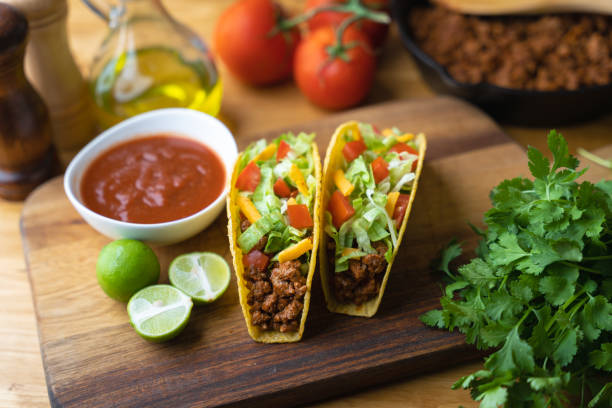

Tacos

Description
This is one of my favourite things to make at home when I'm wanting to make something quick and delicious.
The ingredients are readily available at the grocery store and can often be bought for under $20 total.
The hard shells are a throwback to when my mom would make tacos as a kid, and I find them to be deliciously nostalgic.
If you are looking for something that is low on effort but high on flavour and fun, I'm sure that you will love this recipe.
Put on some party music and have yourself a fiesta tonight!
Ingredients
- 500 grams of beef or chicken (your choice)
- 1 Lime
- 1 Bunch of Cilantro
- Sour Cream
- Salsa
- Sharp Cheddar Cheese
- Garlic Powder
- Chili Powder
- Smoked Paprika
- 1 Box of Hard Shell Tacos
- Salt and Pepper
- Tobasco Sauce
Steps
- Prep Ingredients (10 mins)
- Wash Cilantro and pick leaves from stems;
- Grate half of the Cheddar Cheese;
- Cut and Juice half of the lime. Slice the other half into wedges;
- Place Taco Shells on a baking sheet;
- Pre-heat oven to 350 degrees Fahrenheit
- Heat a cast iron pot at medium hight heat on the stove top
- Drop a bead of water onto the surface. If it evaporates rapidly, you are ready to start cooking.
- Cook the meat until there is no more pink visible when you stir. This should take about 5-8 minutes.
- Remove pot from the stove top and drain meat into a colander in the sink
- Allow the juices to drain completely
- Place Taco Shells into the Oven and bake for 8-10 minutes
- Set a timer, remove shells, and allow them to cool for 3-4 minutes
- Add meat back into the pot and place onto the stove top on medium high heat
- Add a half cup of water and the lime juice to the meat
- Add spices:
- 2 tablespoons of Garlic Powder
- 2 tablespoons of Chili Powder
- 1 tablespoon of Smoked Paprika
- Salt and Pepper to taste
- Allow meat to cook for another 8-10 minutes, stirring occasionally.
- Remove from stove top when the moisture is minimal after pressing on it with you spoon or spatula
- Allow the meat to rest for 5 minutes
How I prepare my tacos
- First, I place a generous amount of sour cream as the base and spread throughout the base and sides
- Next, I layer the bottom with a generous helping of Cheddar Cheese
- Use a spoon or spatula to add your meat. The heat helps to melt the cheese just below it
- Apply a sprinkle of your favourite hot sauce. I like to use Tobasco!
- Add on your salsa. Pro tip: place a dollop in the middle and use the spoon to fan out to the edges
- Place a healthy layer of cilantro on top for colour and flavour